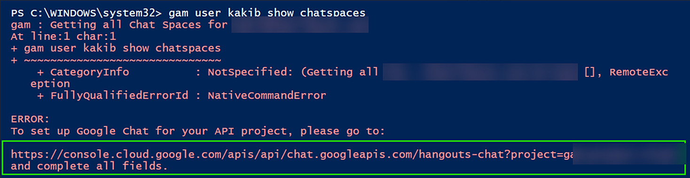
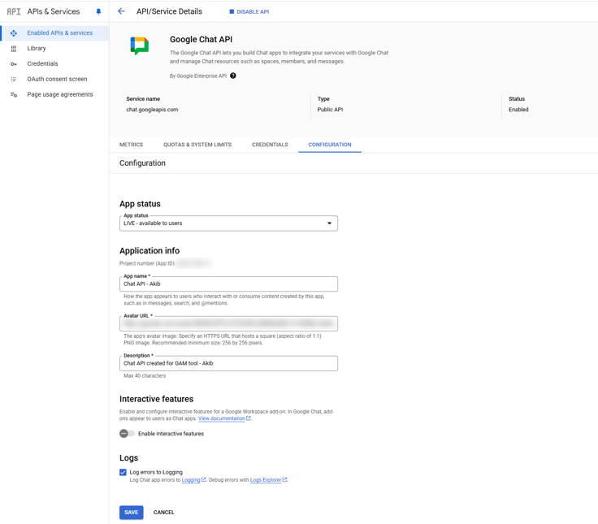
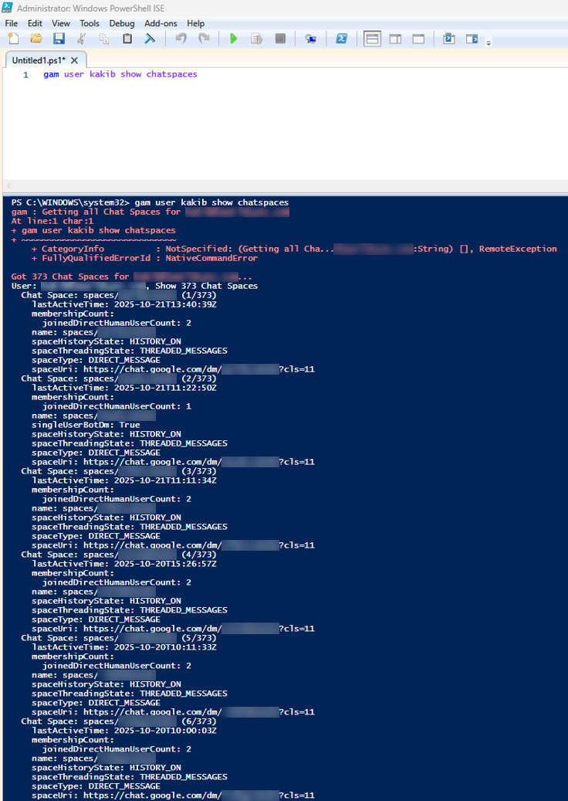
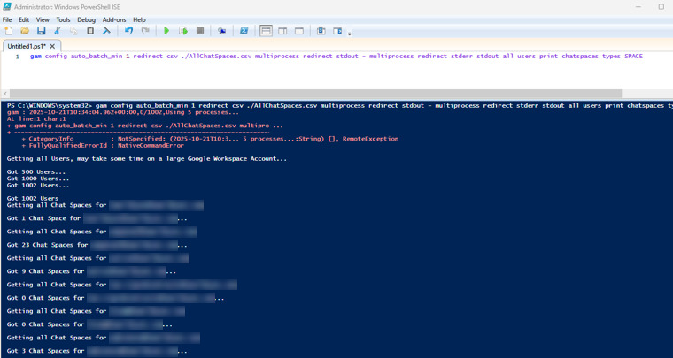

GAM commands for Google Chat fail until the Google Chat API is enabled and configured in the Google Cloud project GAM uses. If there are several GAM projects in the console, finding the right one is the slow part. This shortcut skips that.
Step 1: Let GAM tell you the exact project link
- Open PowerShell on your admin machine and run any Chat command, for example:
gam user admin@contoso.com show chatspaces - If the API isn't set up, GAM returns an error that contains the exact setup URL for your project:

GAM prints the setup link for the right project - Open that link in a browser where you're signed in as a Google Workspace super admin.
Step 2: Enable and configure the API
- Click Enable if the API isn't already enabled.
- From the API page, open the Configuration tab and fill in:
- App name, for example GAM Chat Management
- Avatar URL: a direct link to an image (a free generator: gravatar-url-generator)
- Description: a short description
- Under Interactive features, make sure they're turned off. GAM only needs API access, not a chat bot.
- Click Save.

The finished configuration
Step 3: Verify
Run the original command again. It now lists the user's Chat spaces:

Bonus: export every Chat space in the domain
This crawls every user's spaces in parallel and writes them to one CSV (name, display name, created date and so on):
gam config auto_batch_min 1 redirect csv ./AllChatSpaces.csv multiprocess redirect stdout - multiprocess redirect stderr stdout all users print chatspaces types SPACE
Shared spaces appear once per member, so open the CSV in Excel and use Data → Remove Duplicates.